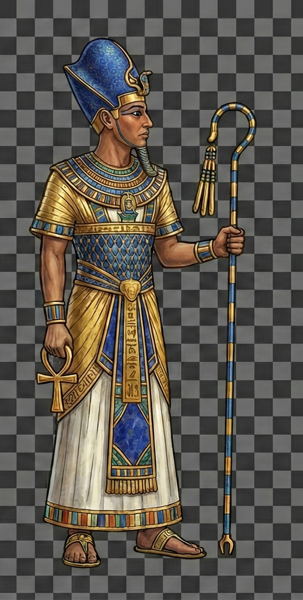
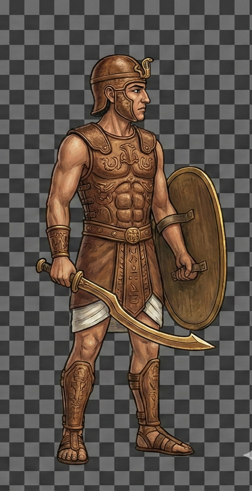
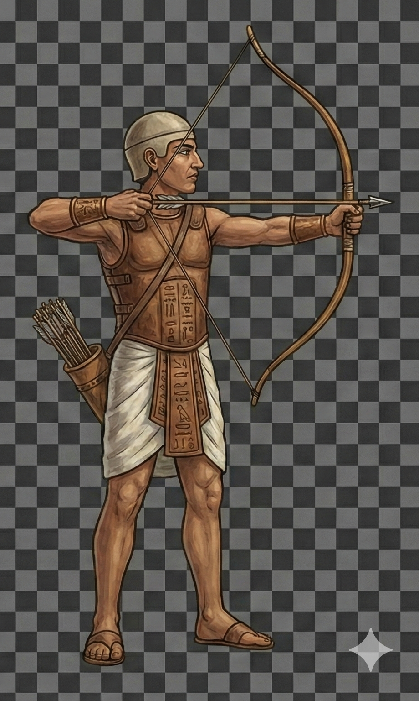

角色選擇與血脈測試頁面
說明：完成第 1 周目 解鎖
法師
；第 2 周目 解鎖
武士
；第 3 周目 解鎖
弓箭手
。選角時會隨機跳出三種血脈，請選一個主要血脈（永久）。血脈依職業區別，沒有共用。
目前週目（已完成次數）：
0
使用遊戲 UI
-
+
重置為 0
模擬完成一個周目

法師 (Mage)
解鎖：完成 1 周目
選擇法師

武士 (Warrior)
解鎖：完成 2 周目
選擇武士

弓箭手 (Archer)
解鎖：完成 3 周目
選擇弓箭手
目前已選角色：
（尚未選擇）
模擬：觸發技能（閃電圖示）
選擇你的血脈
從下列三個隨機血脈中選一個作為你的主要血脈（永久效果）。
關閉